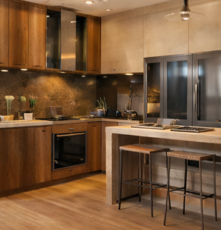

Cozinhas
01O lugar onde os melhores momentos começam.
Quero uma cozinha assimFEITO PARA O SEU JEITO DE VIVER
Mais que móveis, possibilidades. Planejados que unem beleza e funcionalidade para fazer a sua casa ser ainda mais sua.
Planejar meu ambienteOrçamento sem taxa em todo o RJ

Cada detalhe, uma possibilidade.
Seu ambiente, bem aproveitado.
DESIGN & FUNCIONALIDADEPERSONALIDADE EM CADA DETALHEDO SEU JEITO, SOB MEDIDAPOSSIBILIDADES PARA A SUA CASA
Do primeiro café ao último descanso do dia.
Encontre inspiração para transformar o seu espaço.
O lugar onde os melhores momentos começam.
Quero uma cozinha assimSeu refúgio, com espaço para tudo o que importa.
Quero um quarto assimPara receber, relaxar e se sentir em casa.
Quero uma sala assimPEQUENAS IDEIAS. GRANDES POSSIBILIDADES.
56 ideias para você explorar.
Móveis em MDF para sua casa e seu negócio.
Nichos, mesas, armários e muito mais: explore 56 ideias de marcenaria em MDF e imagine cada uma no seu espaço. Medidas, cores, acabamentos e complementos são definidos no orçamento.
Referências de inspiração geradas por IA, com aparência realista. Não são fotos de trabalhos realizados. A proposta é apresentar possibilidades de móveis em MDF para o seu projeto.
56 ideias para explorar
Um detalhe para livros, plantas e objetos de decoração.
Pedir orçamentoMais espaço na parede para organizar e decorar.
Pedir orçamentoMódulos hexagonais para composições cheias de personalidade.
Pedir orçamentoUma composição de prateleiras para valorizar a parede.
Pedir orçamentoPequenos compartimentos para separar seus objetos.
Pedir orçamentoUma composição leve, sem suportes aparentes.
Pedir orçamentoApoio e ganchos para deixar a entrada mais prática.
Pedir orçamentoMódulos abertos para exibir suas coleções.
Pedir orçamentoUm ponto de encontro para as refeições da família.
Pedir orçamentoUma opção para aproximar as pessoas à mesa.
Pedir orçamentoUma superfície que pode ser recolhida após o uso.
Pedir orçamentoUma ideia para refeições rápidas e espaços integrados.
Pedir orçamentoMarcenaria para dar destaque à parede da televisão.
Pedir orçamentoOrganize louças e itens usados na hora de receber.
Pedir orçamentoDeixe os calçados organizados perto da porta.
Pedir orçamentoDivisões internas pensadas para a sua rotina.
Pedir orçamentoUma opção de portas para espaços com circulação reduzida.
Pedir orçamentoRoupas e acessórios à vista, com tudo em seu lugar.
Pedir orçamentoTextura e personalidade para a parede da cama.
Pedir orçamentoArmazenamento na parte alta para itens de uso ocasional.
Pedir orçamentoAproveite as paredes para organizar louças e mantimentos.
Pedir orçamentoArmazenamento e superfície de apoio no mesmo móvel.
Pedir orçamentoUma composição para o espaço sob a cuba.
Pedir orçamentoNicho para forno e micro-ondas em uma composição vertical.
Pedir orçamentoApoio e armazenamento para uma cozinha integrada.
Pedir orçamentoPrateleiras para deixar seus mantimentos organizados.
Pedir orçamentoCompartimentos para organizar suas garrafas.
Pedir orçamentoEspaço sob a bancada para os itens do dia a dia.
Pedir orçamentoGuarde pequenos objetos atrás do espelho.
Pedir orçamentoUma solução aberta para toalhas e acessórios.
Pedir orçamentoOrganize produtos e utensílios de limpeza.
Pedir orçamentoUm compartimento alto para os utensílios maiores.
Pedir orçamentoUma superfície de apoio para cuidar das roupas.
Pedir orçamentoUma ideia para separar roupas em um módulo próprio.
Pedir orçamentoAproveite o espaço acima da lavadora.
Pedir orçamentoUma estação para trabalhar ou estudar em casa.
Pedir orçamentoMais superfície de trabalho para aproveitar um canto.
Pedir orçamentoDocumentos e materiais organizados perto de você.
Pedir orçamentoPrateleiras para uma biblioteca com a sua cara.
Pedir orçamentoUm espaço fechado para arquivos e materiais.
Pedir orçamentoUma ideia para receber os clientes do seu negócio.
Pedir orçamentoPrateleiras para apresentar seus produtos.
Pedir orçamentoUma superfície ampla para atividades e produção.
Pedir orçamentoTente outro nome ou limpe os filtros para ver todas as opções.
Contar minha ideia pelo WhatsApp →VAMOS TIRAR SUA IDEIA DO PAPEL
Conte o que você imagina. Vamos entender seu espaço e conversar sobre as possibilidades para ele.
Começar meu planejamentoFale com a gente pelo WhatsApp e compartilhe o ambiente que você quer transformar.
Medidas, referências e necessidades: cada escolha ajuda a dar forma ao seu espaço.
Converse sobre as opções e os próximos passos. Orçamento sem taxa em todo o Rio de Janeiro.
SUA CASA TEM MUITAS POSSIBILIDADES
Seu próximo ambiente começa com uma mensagem.
Conversar pelo WhatsApp (21) 98930-0187Rio de Janeiro · Orçamento sem taxa em todo o estado